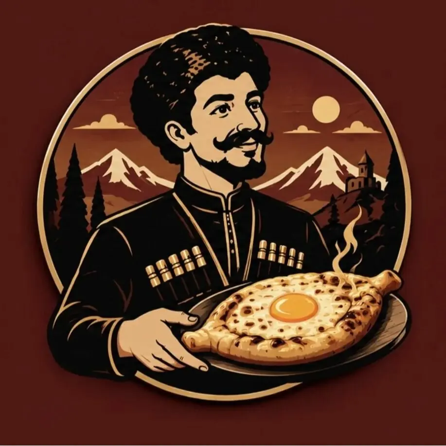
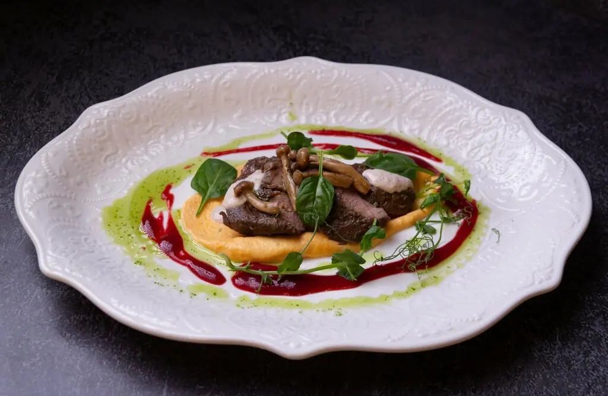
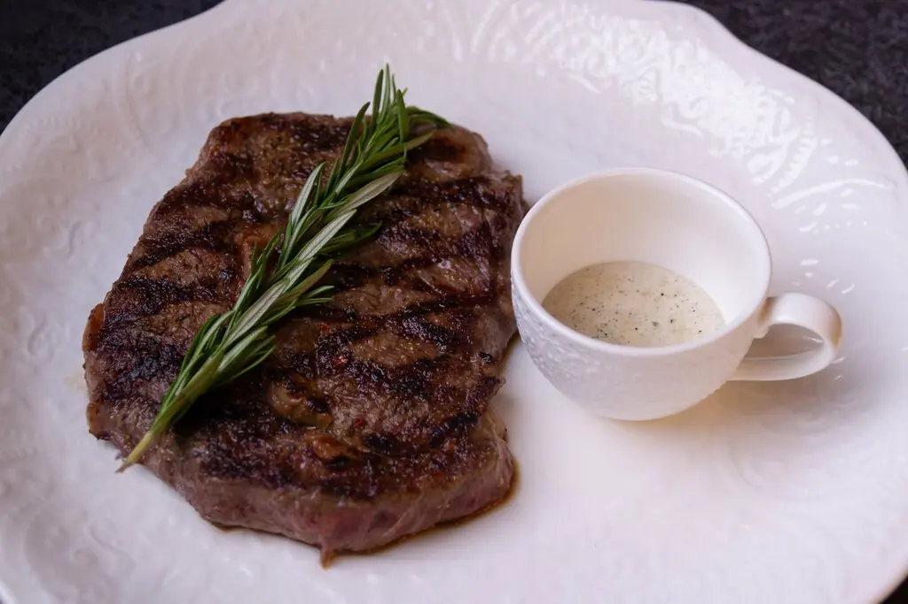
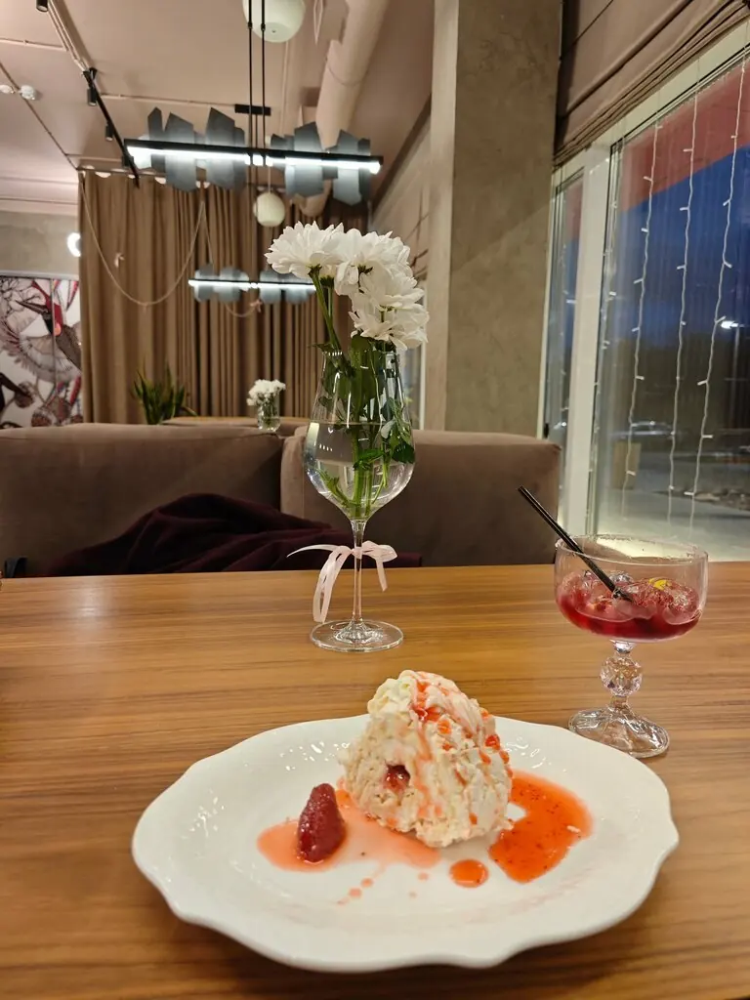
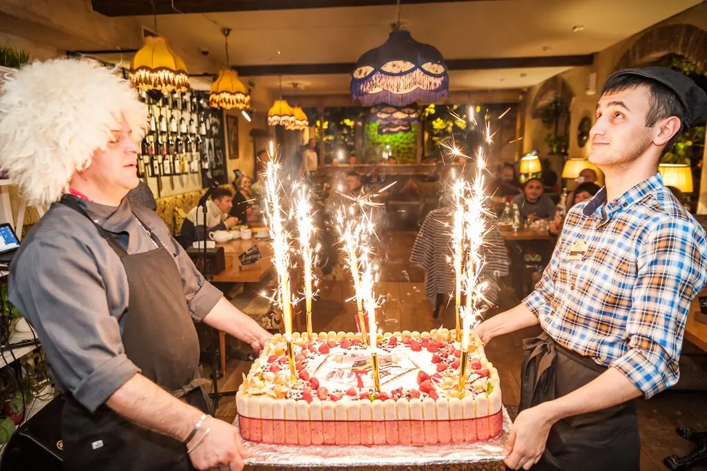
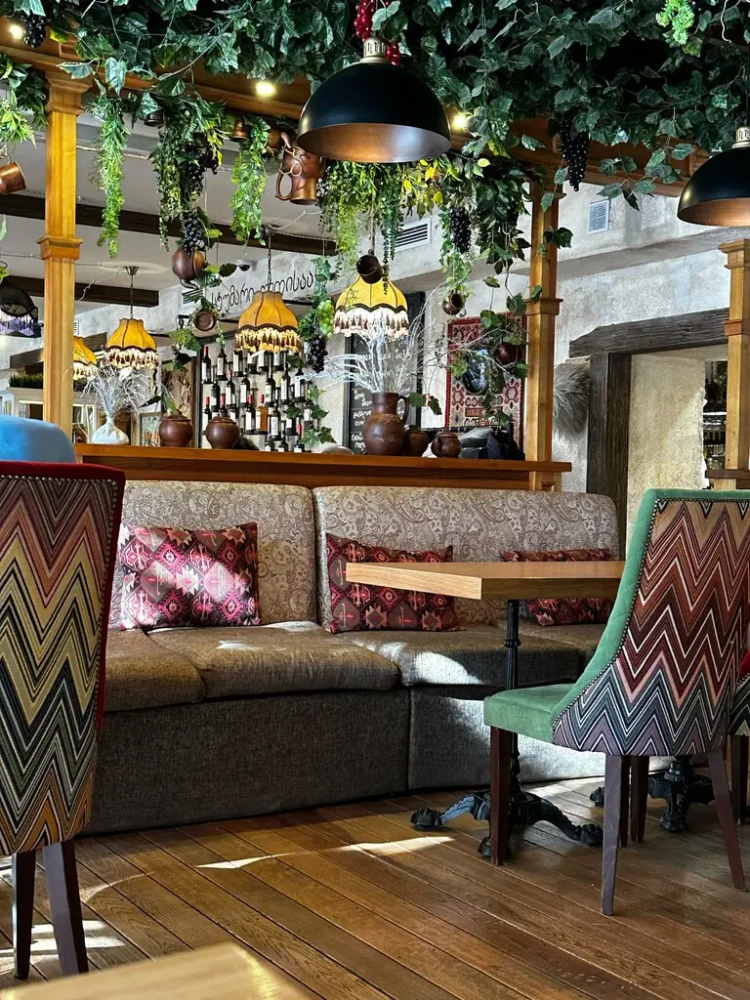
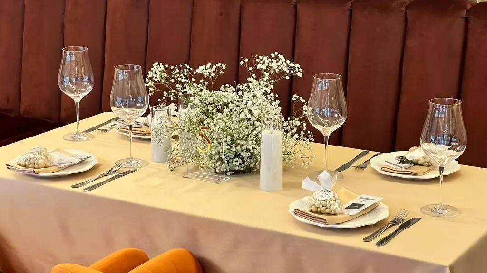

Грузин в парке
Сибирский лось и утка в малиновом соусе за грузинским столом. Заходите как к другу, уходите как к родному.
4,9 · 211 оценок
Три главы ужина

Закуска
Тартар из мраморной говядины550 ₽
Тартар из стерляди470 ₽
Чиабатта с копчёной тюменской вырезкой350 ₽
Салат из баклажанов со страчателлой490 ₽

На углях и горячее
Рибай1 600 ₽
Лось с гратеном в соусе из лисичек700 ₽
Утиная грудка в малиновом соусе760 ₽
Оссобуко970 ₽

Сладкий финал
Парковая шишка300 ₽
Панна котта с маракуйей300 ₽
Костровая уха, если вы всё ещё голодны650 ₽
Часть меню с Яндекс Карт, цены уточняйте у официанта.
Отмечать здесь — обычное дело
Банкетные столы, бенгальские огни на торте и 80 мест в зале с зелёным садом на потолке.



Слова гостей
Все блюда с красивой подачей, а главное великолепные на вкус, советую!Лиза
Отличный ресторан с приятной атмосферой и выбором грузинских блюд. Доступные цены.Оксана Тиханова
Очень уютный ресторан, всё было свежим и красиво подано.Городской житель